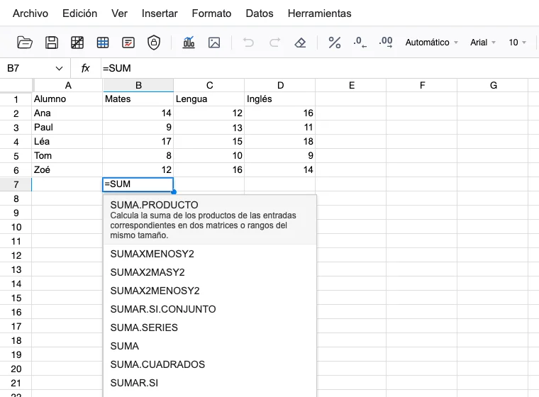
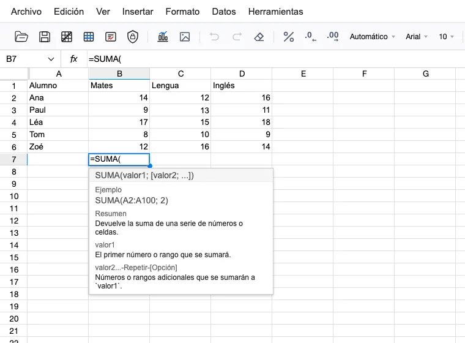
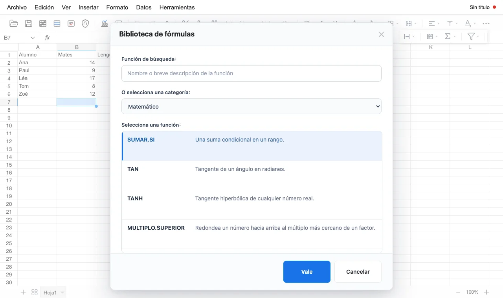

Las fórmulas
Escribir una fórmula
Una fórmula empieza por =. Contiene números, textos entre comillas, referencias a celdas, operadores y funciones.
=B2*2
=(B2+C2+D2)/3
=PROMEDIO(B2:B6)
="Total: "&SUMA(B2:B6)La celda muestra el resultado, la barra de fórmulas la fórmula. Las celdas que dependen de una celda modificada se recalculan al instante.
En español, la coma es decimal y el punto y coma separa los argumentos: =REDONDEAR(3,14159; 2). Los nombres de funciones se escriben en minúsculas o mayúsculas, en español o en inglés: =suma(B2:B6) y =SUM(B2:B6) se aceptan.
Señalar las celdas con el ratón
Al escribir una fórmula, un clic en una celda de la hoja inserta su dirección, un arrastre inserta el rango. Cada referencia tiene su color, en la fórmula y en la hoja.
El autocompletado
Desde las primeras letras de un nombre, DocCells propone las funciones que las contienen: ↑ ↓ para recorrer, Intro, Tab o un clic para elegir. Tras el paréntesis de apertura, una ayuda recuerda los argumentos.


La suma automática
escribe una suma. Su flecha propone Suma, Media, Contar, Máx, Mín y Todas las fórmulas: la biblioteca, donde se busca una función por su nombre, su descripción o su categoría.

Operadores
| Operador | Función |
|---|---|
+ - * / | cuatro operaciones |
^ | potencia: =2^10 |
% | porcentaje: =20%*B2 |
& | une textos: =A2&" "&B2 |
= <> | igual, distinto |
< > <= >= | comparaciones |
( ) | prioridad |
Las potencias van antes que los productos y cocientes, luego las sumas y las comparaciones. =-2^2 da −4 (4 en Excel).
Referencias
| Escritura | Designa |
|---|---|
B2 | una celda; sigue el relleno |
$B$2 | la misma celda, aunque se rellene |
B$2, $B2 | fila fija, columna fija |
B2:D6 | un rango |
B:B, 2:2 | una columna, una fila entera |
Hoja2!B2, 'Notas 2'!B2 | una celda de otra hoja |
notas | un rango con nombre |
Rellenada hacia abajo, =B2*$B$1 pasa a ser =B3*$B$1, =B4*$B$1…
Condiciones
=SI(B2>=10; "aprobado"; "suspenso")
=SI(Y(B2>=10; C2>=10); "sí"; "no")
=CAMBIAR(A2; "a"; 1; "b"; 2; 0)
=CONTAR.SI(B2:B6; ">10")
=SUMAR.SI(A2:A6; "Ana"; B2:B6)
=PROMEDIO.SI(B2:B6; "<10")- Los valores lógicos se escriben
VERDADERO()yFALSO(), con los paréntesis. Se muestran como TRUE y FALSE. - Un criterio es un texto:
">10","<>0","Ana". Los comodines*y?no se reconocen. - Una celda vacía se reconoce con
=B2=""; no es igual a 0.
Buscar en una tabla
=BUSCARV("Léa"; A2:D6; 3; 0)
=INDICE(A2:A6; COINCIDIR(MAX(B2:B6); B2:B6; 0))La primera busca Léa en la primera columna de la tabla y devuelve la tercera; el último argumento 0 pide el valor exacto. La segunda da el nombre de quien tiene la mejor nota.
Fechas y horas
Una fecha es un número de días, una hora una fracción de día: en celdas, se suman y se restan.
=A2+7
=A3-A2
=DIAS(A3; A2)
=DIASEM(A2; 2)Una fecha dada por FECHA o HOY debe pasar por una celda para sumarle algo: =HOY()+1 da #VALUE!, pero si A1 contiene =HOY(), =A1+1 da mañana. El resultado es un número: darle un formato Fecha.
Los errores
| Se muestra | Causa |
|---|---|
#NAME? | nombre desconocido: error de tecleo, función no calculada, VERDADERO sin paréntesis, texto sin comillas |
#VALUE! | tipo inesperado: un texto donde hace falta un número |
DIV/0 | división por cero o por una celda vacía |
#N/A | valor no encontrado (COINCIDIR, BUSCARV), o GEO fuera de DocGeo |
#REF! | celda u hoja que no existe |
#NUM! | número fuera del dominio: =RAIZ(-1) |
#ERROR! | fórmula mal escrita, o función no calculada |
SI.ERROR sustituye el error de una función (#N/A, #NUM!): =SI.ERROR(BUSCARV(E1; A2:D6; 2; 0); "ausente"). No sustituye el de un cálculo (DIV/0, #VALUE!): contra una división por cero, comprobar el divisor, =SI(B2; B3/B2; ""), que sirve tanto para un cero como para una celda vacía.